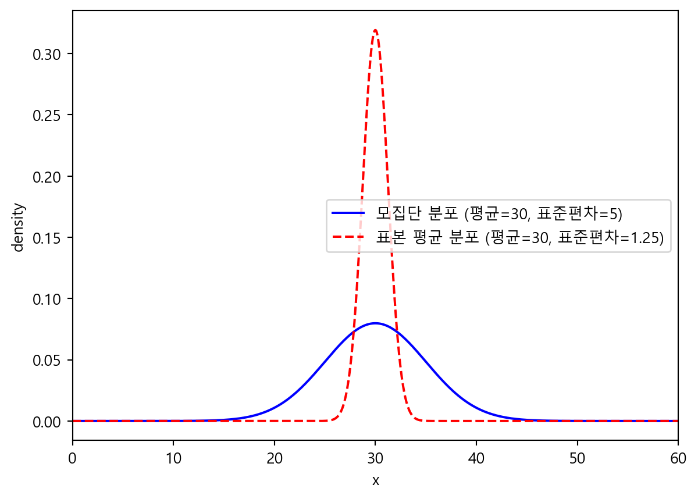

3) 슬통이는 상위 10%에 해당하는 점수를 얻었다고 한다면, 슬통이의 점수는 얼마인지 계산해보세요.
from scipy.stats import norm# 평균과 표준편차mean =30std_dev =5# 상위 10%에 해당하는 점수 (상위 10%는 90번째 백분위수)percentile =0.9# 상위 10%에 해당하는 점수 계산score = norm.ppf(percentile, mean, std_dev)print("슬통이의 점수: "+str(score) +"점 입니다")
슬통이의 점수: 36.407757827723점 입니다
4) 슬기로운 통계생활의 해당 회차 수강생은 16명이었다고 한다. 16명의 통계 파트 점수를 평균 내었을때, 이 평균값이 따르는 분포의 확률밀도 함수를 1번의 그래프와 겹쳐 그려보세요.
import scipy.statsimport matplotlib.pyplot as pltimport numpy as np# 그래프 폰트를 '맑은 고딕'으로 설정plt.rcParams['font.family'] ='Malgun Gothic'plt.rcParams['axes.unicode_minus'] =False# 마이너스 기호가 깨지는 것을 방지# 원래 모집단의 정규분포 (평균 = 30, 표준편차 = 5)norm_dist = scipy.stats.norm(loc=30, scale=5)# 샘플 평균의 정규분포 (평균 = 30, 표준편차 = 1.25)sample_mean_dist = scipy.stats.norm(loc=30, scale=5/ np.sqrt(16))x = np.linspace(0, 60, 1000)# 원래 정규분포의 확률밀도 함수density = norm_dist.pdf(x)# 샘플 평균의 정규분포 확률밀도 함수sample_mean_density = sample_mean_dist.pdf(x)# 그래프 그리기plt.plot(x, density, label='모집단 분포 (평균=30, 표준편차=5)', color='blue')plt.plot(x, sample_mean_density, label='표본 평균 분포 (평균=30, 표준편차=1.25)', color='red', linestyle='--')plt.xlabel('x')plt.ylabel('density')plt.xlim(0, 60)plt.legend()plt.show()

5) 슬기로운 통계생활 ADP반 수강생들의 통계점수를 평균내었다고 할 때, 이 값이 38점보다 높게 나올 확률을 구하세요.
from scipy.stats import norm# Z-값 계산z_value = (38-30) / (5/ (16**0.5))# Z-값이 6.4보다 큰 확률 (1 - CDF(6.4))probability =1- norm.cdf(z_value)probability
np.float64(7.76885222819601e-11)
2.
Covid-19의 발병률은 1%라고 한다. 다음은 이번 코로나 사태로 인하여 코로나 의심 환자들 1,085명을 대상으로 슬통 회사의 “다잡아”키트를 사용하여 양성 반응을 체크한 결과이다.
1)다잡아 키트가 코로나 바이러스에 걸린 사람을 양성으로 잡아낼 확률을 계산하세요.
# p(진짜 양성) / p(진짜 양성) + p(가짜 양성)370/(370+15)
0.961038961038961
2) 슬통 회사에서 다잡아 키트를 사용해 양성으로 나온 사람이 실제로는 코로나 바이러스에 걸려 있을 확률을 97%라며, 키트의 우수성을 주장했다. 이 주장이 옳지 않은 이유를 서술하세요.
# Covid-19의 발병률 1%를 고려하지 않았음.# 키트 기준 p(진짜 양성) / p(진짜 양성) + p(거짓 음성)370/ (370+10)# 베이즈 정리를 이용해 실제로 양성일 확률을 계산한다.# 발병률(1%) * 코로나 의심 환자 (1,085명)0.01*1085# 즉 코로나 의심 환자 1,085명 중 실제 양성은 약 10.85명임.# 실제 발병률인 1%를 고려하지 않고 확률을 예측했기 때문에 주장이 옳지 않다.
10.85
3) Covid-19 발병률을 사용하여, 키트의 결과값이 양성으로 나온 사람이 실제로 코로나 바이러스에 걸려있을 확률을 구하세요.
sol = (0.01* (370/385)) / (0.01* (370/385) +0.99* (10/700))round(sol, 3)
4) 자유도가 4인 카이제곱분포를 따르는 확률변수에서 나올 수 있는 값 중 상위 5%에 해당하는 값은 얼마인지 계산해보세요.
chi2.ppf(0.95, 4)
np.float64(9.487729036781154)
5) 3번에서 뽑힌 표본값들 중 상위 5%에 위치한 표본의 값은 얼마인가요?
np.percentile(sample_data, 95)
np.float64(9.079466124811068)
6) 평균이 3, 표준편차가 2인 정규분포를 따르는 확률변수에서 크기가 20인 표본, 𝑥1, …, 𝑥20,을 뽑은 후 표본분산을 계산한 것을 𝑠21이라 생각해보죠. 다음을 수행해보세요!
• 같은 방법으로 500개의 𝑠2 들, 𝑠21 , 𝑠22 , …, 𝑠2 500 발생시킵니다. • 발생한 500개의 𝑠2 들 각각에 4.75를 곱하고, 그것들의 히스토그램을 그려보세요. (히스토그램 을 그릴 때 probability = TRUE 옵션을 사용해서 그릴 것) • 위에서 그린 히스토그램에 자유도가 19인 카이제곱분포 확률밀도함수를 겹쳐그려보세요.